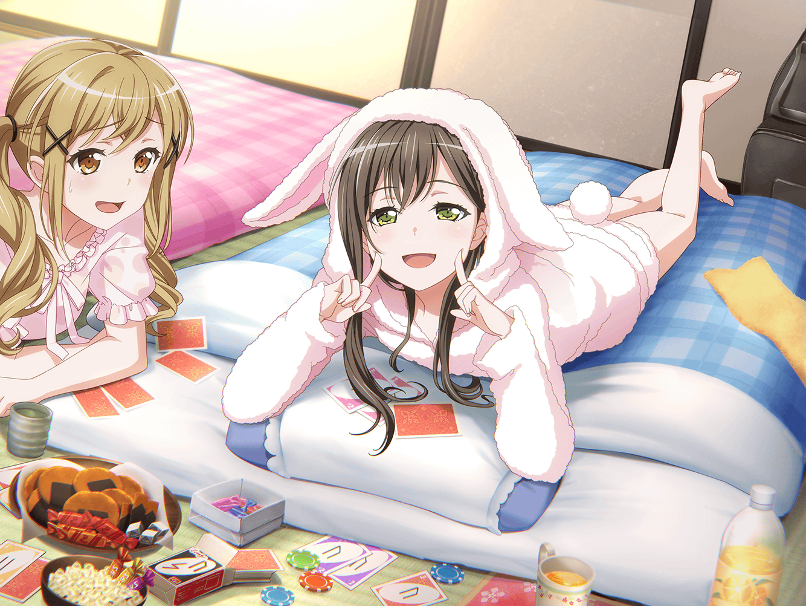

たえ
いい天気……
たえ
空も青いし、風も気持ちいいし……
たえ
ボーッとしてたら、このまま眠っちゃうかも
たえ
……うん、決めた。
このまま、スタジオに練習しに行こう
たえ
えっと、スタジオの電話番号は……
香澄
だから～
折角の休日なんだしさ～
有咲
だからって、私の家に来る必要性が
どこにもないだろ！？
香澄
えぇ！
いいじゃん！ 友達でしょ？
香澄
……ってことは、家にお邪魔するのも
自然なことだと思わない？
有咲
思わない！
そう何度も何度も
うちに上がらせてたまるかっ！
香澄
どうしてどうして！？
有咲の家で出てくるお茶美味しいじゃん！
有咲
私の家を喫茶店扱いする気か！？
たえ
あ、香澄と有咲だ
香澄
あ、おたえだ！
やっほ～！！
たえ
やっほー
有咲
こんなところで何をしてるんだよ？
たえ
散歩
たえ
二人は、今日も仲よしだね
香澄
うんっ！ 仲よしだよ！
有咲
バッ！？
仲よしじゃねぇよ！
香澄
おたえは、こんな所で
何やってるの？
たえ
休日だから、ゆっくりしてただけ。
いい天気だから
有咲
まあ、今日はいい天気だな
たえ
それで、
ふたりは何をイチャイチャしてたの？
有咲
い、イチャイチャなんかしてない！
有咲
どこをどう見たら、
そう見えるんだよ……ったく
たえ
だって有咲の家、行くとか行かないとか言ってたし
たえ
……そういうのってイチャイチャって言うよね？
有咲
言わねぇよ！
香澄
ねえねえ、おたえも一緒に有咲の家に行こうよ！
香澄
ゆっくりするなら、有咲の家が一番だよ！
たえ
確かに、おばあちゃんのお茶も美味しいし
有咲
おい、なに勝手に話を進めてるんだ！
私の家だぞ！
香澄
ね～、おたえも行こうよー
たえ
ん～……有咲、いい？
有咲
ここまで勝手に話を進められたら……しょうがないだろ。
はぁ……
香澄
わ～い、やった～！
香澄
有咲の家行くの、すごく久しぶり！
たえ
どのくらいぶりなの？
香澄
ん～と、ゆり先輩の
バースデーライブの時ぶりかな？
たえ
そういえば、あの時のお泊り、楽しかったなあ〜
有咲
ハァ……そうかよ……
香澄
私も私も！
楽しかったね！
たえ
蔵って夜になると暗くて静かで……集中でき……
たえ
くらは……くらくて……ぷっ……！
有咲
……おい、おたえがヘンなツボにはまってるぞ
香澄
えっ？ おたえ、なんで、なんでー！？
たえ
くらいくら……くら……ふふっ……ヘンなの……！
香澄
くらいくら？ え？
あ、有咲あ〜、おたえどうしちゃったの〜！？
有咲
ああ、もう！
しらねーよ！ もー、たえらんねー！
お前ら、落ち着けっ！
たえ
もう、たえらんねー……たえ、らんねー……
有咲
……はあ、もうまじ、勘弁してくれよー！